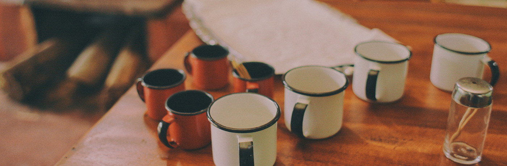
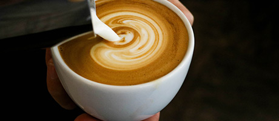
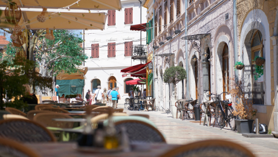
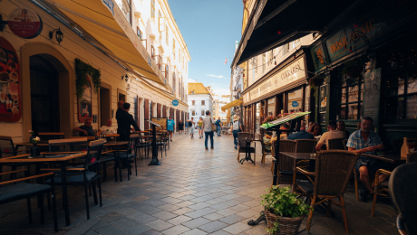
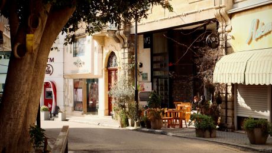

Cafés com a cara do Brasil
Sabores especiais direto das fazendas de Minas Gerais

Sabores especiais direto das fazendas de Minas Gerais


Na GreennCoffe, valorizamos cada etapa da produção para oferecer uma experiência única em cada xícara. Nossos grãos são cuidadosamente selecionados e torrados para preservar seus aromas, sabores e características naturais, levando até você o melhor do café brasileiro.
Um café equilibrado e marcante, com aroma envolvente e sabor suave. Ideal para quem aprecia uma bebida tradicional e cheia de personalidade.
Leve e aromático, o Carioca combina suavidade e intensidade na medida certa, perfeito para começar o dia com uma xícara especial.
Com sabor encorpado e aroma intenso, o Mineiro valoriza a tradição dos cafés produzidos nas montanhas de Minas Gerais.

Um espaço acolhedor para aproveitar nossos cafés, encontrar amigos e desfrutar de momentos especiais ao longo do dia.
Ver localização
Visite nossa unidade e descubra diferentes sabores de café em um ambiente confortável, moderno e agradável.
Ver localização
Um ponto de encontro para quem gosta de café de qualidade, bons momentos e sabores que representam o Brasil.
Ver localizaçãoPromoções, lançamentos e eventos exclusivos